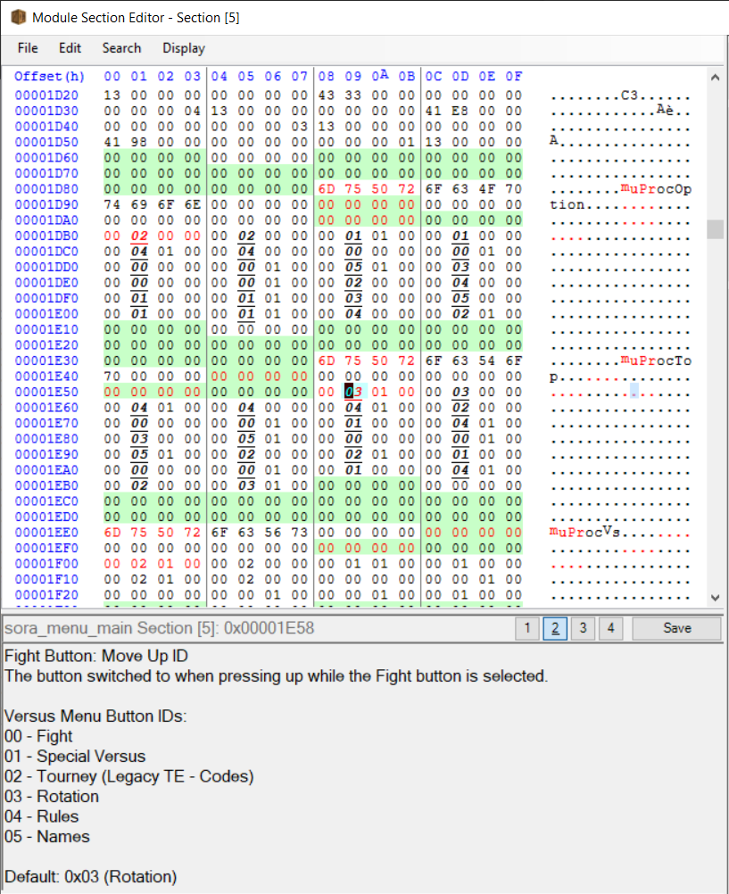
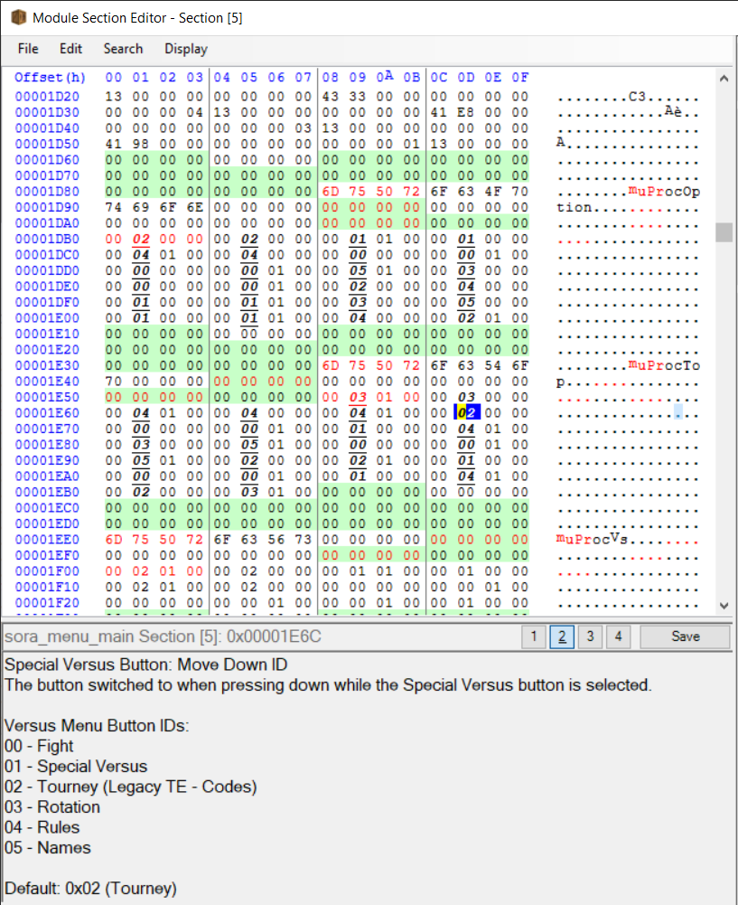
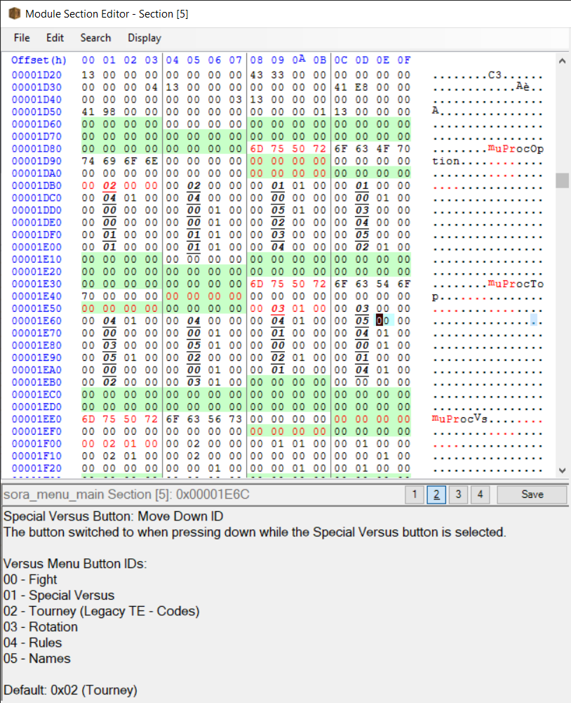

The location of each button is controlled by bone position in the animations. The initial location is found on frame 10 of MenMainIconXXXX_TopN__0, controlled by the bone rotN.
The location, if updated, needs to be copied from the first animation to the other animations, in these spots:
First frame of MenMainIconXXXX_TopN__1
Last frame of MenMainIconXXXX_TopN__2
First frame of MenMainIconXXXX_TopN__3
First frame of MenMainIconXXXX_TopN__4
First frame of MenMainIconXXXX_TopN__5
Note, if you are editing the scale of the button by bone instead of the mesh itself, be aware that there is likely a few additional keyframes after frame one controlling scale.
This allows you to change the locations of the buttons, but the navigation table for them is still unchanged. For example, by default pressing down on the VS button will make the cursor move to the Online button. This behavior will not change until we start messing with stuff.
Start by opening sora_main_menu.rel in BrawlCrate, right click Section [5] and click Open in Memory Viewer. Depending on what menu and button you are editing, you need to jump to certain memory addresses in the file. With help from soopercool101, these addresses are labelled in BrawlCrate.
You can search for the menu you look to edit, or the specific button. As an example, let's modify a button in the Versus menu. With BrawlCrate, you can search through the annotations by pressing Ctrl+F and then clicking the Text (Annotations) option above the text box. In this example, I typed in "versus menu" to jump to the section for the versus menu buttons.

The bolded numbers are the values that make up the navigation table, in this case the one I have selected is for the Fight button's move up ID. In this example, let's edit the Special Versus button so that when we press down, it moves to the Names button instead of the Tourney/Codes button.
Let's start by searching for the Special Versus Button. In this case, we are looking for the move down ID, so we can search for the specific address by searching "Special Versus Button: Move Down ID" in the annotations.

As noted by our annotations, the default for the Special Versus move down ID is 02, the id for the Tourney/Codes button. For this example, we change that number to be the number for the Names button, which the annotations indicate is 05.

With this done, we can now save file. Exit out of the memory viewer, and press Ctrl+S or Save in the file menu. Now all that's left to do is try it out! Put it into the game and test to see if your changes worked!
Enjoy making your own menus!
This guide will cover the basics of editing the main menu and changing layouts. The guide is split up into sections, and you can jump to different sections depending on what you are trying to do.
Changing the buttons